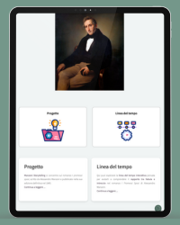
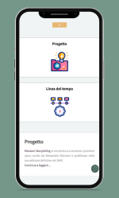

Aiuto
Qui trovi una raccolta delle domande più frequenti (FAQ) con le relative risposte, pensata per aiutarti a chiarire rapidamente i dubbi più comuni e a trovare subito le informazioni di cui hai bisogno.
Qui trovi una raccolta delle domande più frequenti (FAQ) con le relative risposte, pensata per aiutarti a chiarire rapidamente i dubbi più comuni e a trovare subito le informazioni di cui hai bisogno.
Questo progetto si concentra sulla rappresentazione visiva dell’analisi e del confronto tra fabula e intreccio, che costituiscono la struttura del celebre romanzo storico I promessi sposi di Alessandro Manzoni, pubblicato nel 1840.
Sebbene il romanzo sia conosciuto in tutto il mondo e sia già stato ampiamente studiato, analizzato, digitalizzato e rappresentato sia in forma analogica che digitale da diverse prospettive, il rapporto tra fabula e intreccio rimane ancora uno degli aspetti meno esplorati.
L’obiettivo del progetto è proprio quello di rappresentare visivamente questo legame attraverso una timeline. Ciò permette di comprendere meglio l’intera vicenda visualizzando i principali avvenimenti: da un lato in ordine cronologico, dall’altro in ordine narrativo.
Il sito è composto da sei grandi macrosezioni principali, alcune delle quali sono anche suddivise in ulteriori specifiche sottosezioni.
Eccole:
Quanto conosci i personaggi?: si tratta di un quiz a scelta multipla articolato in otto sezioni, ciascuna composta da cinque domande con una sola risposta corretta. Per completare ogni sezione hai a disposizione soltanto 30 secondi, rendendo l’attività più sfidante e dinamica.
Certamente, il sito è stato progettato per essere utilizzato su dispositivi di qualsiasi dimensione, dal telefono al computer.
Manzoni Storytelling nasce con una finalità didattica e scolastica ed è quindi consigliata la consultazione da computer, per garantire una fruizione più completa dei contenuti e una leggibilità chiara e immediata.
È stato comunque progettato in modo responsivo, così da risultare facilmente accessibile anche da tablet e smartphone. In questo modo puoi consultarlo in qualsiasi momento e da qualsiasi luogo, senza la necessità di avere sempre con te il computer.


Se trovi un link non funzionante o qualsiasi errore sul sito, significa che sei un utente attento, curioso e competente. Aiutaci a migliorare il sito segnalando eventuali problemi o malfunzionamenti. Puoi inviare un’email ad alicep2401@gmail.com (trovi anche altri contatti nel footer, se necessario), indicando ciò che non funziona o qualsiasi miglioramento che ritieni utile. Il tuo contributo è prezioso!
Il sito è stato creato da Alice Piazzi, studentessa del secondo anno del corso di laurea magistrale di Digital Humanities and Digital Knowledge a Bologna, in collaborazione con l’azienda Sautech Group di Salerno, specializzata nello sviluppo di piattaforme e siti web. Il progetto è stato realizzato come parte di un tirocinio in preparazione alla tesi.
Tutti i contenuti presenti su questo sito provengono da fonti valide e affidabili.
Per quanto riguarda le risorse tecniche relative alla realizzazione del sito, sono stati consultati e utilizzati come riferimento i tutorial di W3Schools e la guida dettagliata di html.it.
Per la parte concettuale e semantica, i principali riferimenti sono:
il testo de I Promessi Sposi di Alessandro Manzoni (edizione del 1840), sia in formato cartaceo che digitale, in particolare la versione presente su Leggo Manzoni e l'ottimo sito web Leggo Manzoni, as well as the website alessandromanzoni.org.
Inoltre, sono stati inoltre impiegati strumenti e piattaforme già consolidati, come Canva per gli aspetti grafici e stilistici, oltre a template di html5up.net utilizzati per la parte tecnica, con l’obiettivo di arricchire e rendere il sito più coinvolgente.
Per informazioni più approfondite, puoi consultare la sezione dedicata alla Bibliografia